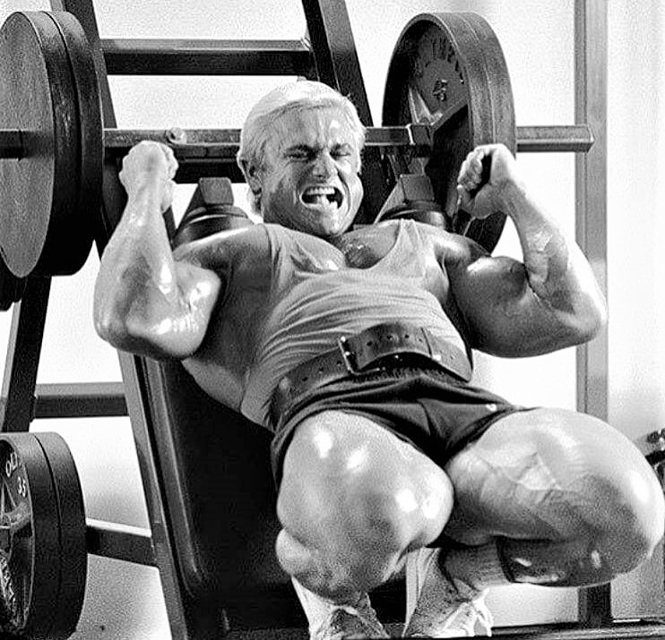
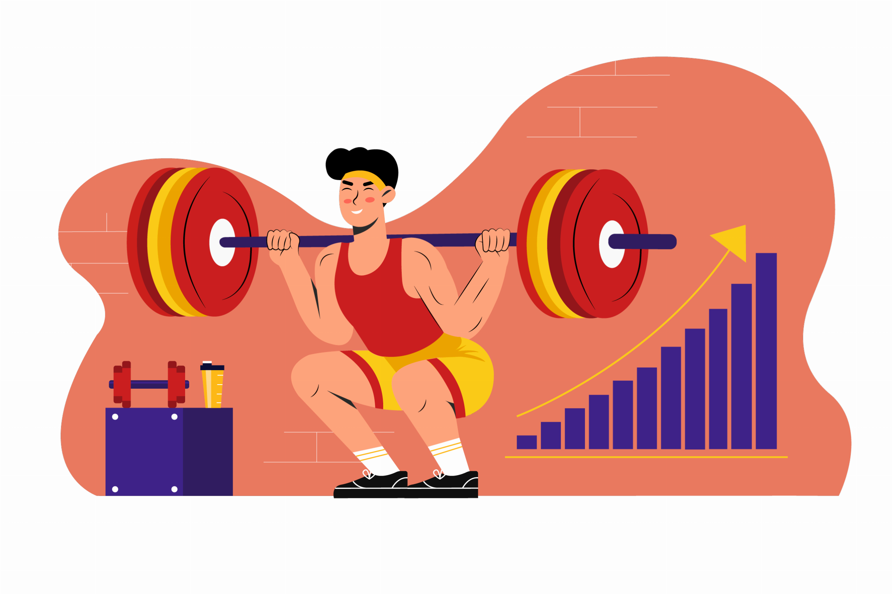

Training
Ein effektiver Bodybuilding-Trainingsplan und wichtige Punkte beim Training.
Ein gut durchdachter Bodybuilding-Trainingsplan ist unerlässlich für den Aufbau von Muskelmasse, Kraft und Definition. Ein solider Plan berücksichtigt nicht nur die Auswahl der Übungen, sondern auch Faktoren wie Trainingsfrequenz, Intensität und Progression.
Hier sind einige wichtige Punkte zu beachten:
- Zielsetzung definieren: Bevor du mit dem Training beginnst, solltest du dir klare Ziele setzen. Möchtest du Muskelmasse aufbauen, Kraft steigern, Fett verlieren oder eine Kombination aus allem erreichen?
- Trainingsfrequenz: Für optimale Ergebnisse im Bodybuilding ist eine ausgewogene Trainingsfrequenz entscheidend. Das bedeutet, dass du jedem Muskel genügend Zeit zur Erholung gibst, während du trotzdem regelmäßig trainierst. Ein typisches Split-Training, bei dem verschiedene Muskelgruppen an verschiedenen Tagen trainiert werden, ist üblich.
- Intensität und Volumen: Die Intensität bezieht sich auf den Schwierigkeitsgrad des Trainings, während das Volumen die Gesamtmenge der Arbeit beschreibt. Ein ausgewogenes Verhältnis von Intensität und Volumen ist wichtig, um Übertraining zu vermeiden und dennoch genügend Reiz für das Muskelwachstum zu setzen.
- Progression: Um kontinuierliche Fortschritte zu erzielen, ist es wichtig, die Trainingsbelastung im Laufe der Zeit zu erhöhen. Das kann durch Erhöhung des Gewichts, der Wiederholungen oder der Trainingsintensität erfolgen.


